Moment cinétique pratique\(\vec\sigma_{A\in S/R_g}=\bar{\bar I}_{(A,S)}.\vec\Omega_{S/R_g}+m\,\overrightarrow{AG}\wedge\vec V_{A\in S/R_g}\)
Moment dynamique / cinétique\(\vec\delta_{A\in S/R_g}=\Big[\dfrac{d\vec\sigma_{A\in S/R_g}}{dt}\Big]_{R_g}+\vec V_{A/R_g}\wedge m\vec V_{G\in S/R_g}\)
Opérateur d'inertie\(\bar{\bar I}_{(A,S)}=\begin{pmatrix}A&-F&-E\\-F&B&-D\\-E&-D&C\end{pmatrix}\), \(A{=}\int(y^2{+}z^2)dm\), \(D{=}\int yz\,dm\) (idem \(B,C,E,F\) par permutation)
Théorème de Huygens\(\bar{\bar I}_{(O,S)}=\bar{\bar I}_{(G,S)}+m\begin{pmatrix}b^2{+}c^2&-ab&-ac\\-ab&a^2{+}c^2&-bc\\-ac&-bc&a^2{+}b^2\end{pmatrix}\), \(\overrightarrow{OG}=a\vec x{+}b\vec y{+}c\vec z\)
Translation\(\{\mathcal T_{ext\to S}\}_A=\{m\vec\Gamma_{G\in S/R_g}\,;\ m\,\overrightarrow{AG}\wedge\vec\Gamma_{G\in S/R_g}\}\), nul en \(G\)
Rotation autour d'un axe fixe \((O,\vec z)\)\(\{\mathcal T_{ext\to S}\}_O=\{m\vec\Gamma_{G\in S/R_g}\,;\ J\ddot\theta\,\vec z\}\) si \(G\) sur l'axe et axe principal
Dérivée d'une composante (astuce)\(\Big[\dfrac{d\vec u}{dt}\Big]_R\!\cdot\vec z=\Big[\dfrac{d(\vec u\cdot\vec z)}{dt}\Big]_R-\vec u\cdot\Big[\dfrac{d\vec z}{dt}\Big]_R\) — nul si \(\vec z\) fixe dans \(R\)
Formule de Bour\(\Big[\dfrac{d\vec u}{dt}\Big]_{R_1}=\Big[\dfrac{d\vec u}{dt}\Big]_{R_2}+\vec\Omega_{R_2/R_1}\wedge\vec u\)
Méthode (6 étapes)graphe de structure → isolement → IAME → écriture du PFD → détermination du torseur dynamique → équations/résolution (mêmes point + base)
1. Introduction — référentiels, PFD du point matériel
La dynamique étudie les relations entre les mouvements d'un solide et leurs causes (les
actions mécaniques) : c'est le carrefour entre la cinématique et la statique. Deux problématiques types :
les efforts sont connus et on cherche le mouvement, ou le mouvement est imposé et on cherche les actions
mécaniques qu'il engendre (dimensionnement d'actionneur, tenue de pièce en accélération...).
Référentiel galiléen
Pour écrire les lois de Newton, il faut un référentiel « absolu » (repère + horloge). En mécanique
classique on admet le référentiel de Copernic (origine = centre d'inertie du système solaire, axes
pointant vers des étoiles fixes) comme absolu. Tout référentiel en translation rectiligne uniforme
par rapport à lui est dit galiléen — en particulier le référentiel terrestre (géocentrique), en
négligeant la rotation propre de la Terre.
Base / repère / référentielBase : 3 vecteurs orthonormés directs. Repère : un point origine + une base (outil de calcul,
projections). Référentiel : un repère + une horloge (permet de définir vitesse/accélération). En
pratique on confond souvent repère et référentiel.
★ PFD du point matériel (rappel de physique — 2e loi de Newton)
Pour un point matériel \(P\) de masse \(m\) :
\[\exists R_g\ \text{tq}:\qquad \sum\overrightarrow{F_{ext\to P}}=m\,\overrightarrow{\Gamma_{P/R_g}}
\qquad\text{et}\qquad \sum\overrightarrow{M_{P,ext\to P}}=\vec0\]
La seconde équation est triviale pour un point (toutes les forces sont concourantes en \(P\)) — elle
devient l'enjeu principal du chapitre dès qu'on passe au solide étendu (§2).
2. PFD du solide — torseur dynamique
Un solide \(S\) est modélisé comme un ensemble continu de points matériels \(M\) affectés d'une masse
élémentaire \(dm\). On applique le PFD à chaque \(dm\), puis on intègre sur tout le solide.
2.1 Théorème de la résultante dynamique
Démonstration (idée)
\(\displaystyle\int_S dm\,\overrightarrow{\Gamma_{M\in S/R_g}}=\int_S\Big[\dfrac{d^2\overrightarrow{OM}}{dt^2}\Big]_{R_g}dm
=\Big[\dfrac{d^2}{dt^2}\int_S\overrightarrow{OM}\,dm\Big]_{R_g}=\Big[\dfrac{d^2}{dt^2}\big(m\,\overrightarrow{OG}\big)\Big]_{R_g}
=m\,\overrightarrow{\Gamma_{G\in S/R_g}}\) (masse indépendante du temps, définition de \(G\)).
★★ Théorème de la résultante dynamique (à savoir par cœur)
\[\boxed{\ \sum\overrightarrow{F_{ext\to S}}=m\,\overrightarrow{\Gamma_{G\in S/R_g}}\ }\]
2.2 Théorème du moment dynamique
Démonstration (idée)
En un point \(A\) lié à \(S\) : \(\displaystyle\int_S\sum\overrightarrow{M_{M,ext\to M}}=\vec0\) se réécrit
(changement de point puis PFD ponctuel) :
\[\overrightarrow{M_{A,ext\to S}}+\int_S\overrightarrow{MA}\wedge dm\,\overrightarrow{\Gamma_{M\in S/R_g}}=\vec0
\quad\Longrightarrow\quad \overrightarrow{M_{A,ext\to S}}=\int_S\overrightarrow{AM}\wedge\overrightarrow{\Gamma_{M\in S/R_g}}\,dm\]
★★ Théorème du moment dynamique
\[\boxed{\ \overrightarrow{M_{A,ext\to S}}=\overrightarrow{\delta_{A\in S/R_g}}=\int_S\overrightarrow{AM}\wedge\overrightarrow{\Gamma_{M\in S/R_g}}\,dm\ }\]
2.3 Torseur dynamique
Définition
\(\overrightarrow{F_{ext\to S}}\) et \(\overrightarrow{M_{A,ext\to S}}\) forment le torseur des actions
mécaniques extérieures à \(S\) au point \(A\) (transport de Varignon habituel). De même,
\(m\overrightarrow{\Gamma_{G\in S/R_g}}\) et \(\overrightarrow{\delta_{A\in S/R_g}}\) forment un torseur, le
torseur dynamique de \(S/R_g\) au point \(A\) (lié à \(S\)) :
\[\{\mathcal D_{S/R_g}\}_A=\left\{\begin{array}{l} R\{\mathcal D_{S/R_g}\}=m\,\overrightarrow{\Gamma_{G\in S/R_g}}\\[.2em]
M_A\{\mathcal D_{S/R_g}\}=\overrightarrow{\delta_{A\in S/R_g}}\end{array}\right\}_A\]
\(m\overrightarrow{\Gamma_{G\in S/R_g}}\) est la quantité d'accélération (kg·m·s⁻²), \(\overrightarrow{\delta_{A\in S/R_g}}\)
le moment dynamique (kg·m²·s⁻² ou N·m). Comme tout torseur, il se transporte par Varignon :
\(\overrightarrow{\delta_{B\in S/R_g}}=\overrightarrow{\delta_{A\in S/R_g}}+\overrightarrow{BA}\wedge m\overrightarrow{\Gamma_{G\in S/R_g}}\).
★★★ PFD torseuriel galiléen (résultat central du chapitre)
\[\boxed{\ \{\mathcal T_{ext\to S}\}_A=\{\mathcal D_{S/R_g}\}_A\ }\]
Soit, en séparant résultante et moment (au même point, dans la même base) :
\[\overrightarrow{F_{ext\to S}}=m\,\overrightarrow{\Gamma_{G\in S/R_g}}\qquad,\qquad
\overrightarrow{M_{A,ext\to S}}=\overrightarrow{\delta_{A\in S/R_g}}\]
Piège classique
Les deux torseurs \(\{\mathcal T_{ext\to S}\}\) (bilan des actions mécaniques) et \(\{\mathcal D_{S/R_g}\}\)
(issu du mouvement) se déterminent séparément et indépendamment — puis on les égalise au même
point et dans la même base pour obtenir au maximum 6 équations scalaires.
2.4 Cas d'un ensemble de solides
Pour \(\Sigma=S_1+S_2+\dots+S_n\), les torseurs dynamiques s'additionnent au même point :
\(\{\mathcal T_{ext\to\Sigma}\}_A=\{\mathcal D_{S_1/R_g}\}_A+\dots+\{\mathcal D_{S_n/R_g}\}_A\). Le PFS
(statique) est le cas particulier du PFD où l'accélération est nulle (solide immobile ou en translation
rectiligne uniforme).
2.5 PFD dans un référentiel non galiléen \(R_{ng}\)
Si \(R_{ng}\) n'est pas galiléen, on doit ajouter des forces d'inertie (fictives, proportionnelles à
la masse) :
\[\{\mathcal D_{S/R_{ng}}\}_A=\{\mathcal T_{ext\to S}\}_A-\{\mathcal D_{E,R_{ng}/R_g}\}-\{\mathcal D_{Cor,S/R_g}\}\]
(torseurs des forces d'inertie d'entraînement et de Coriolis). Si \(R_{ng}\) est en translation
rectiligne uniforme par rapport à \(R_g\), ces deux torseurs sont nuls : \(R_{ng}\) est en fait
galiléen. Hors programme de ce chapitre (rappelé pour mémoire).
3. Torseur cinétique
Définition
\[\{\mathcal C_{S/R_g}\}_A=\left\{\begin{array}{l} R\{\mathcal C_{S/R_g}\}=\displaystyle\int_S\overrightarrow{V_{M\in S/R_g}}\,dm=m\,\overrightarrow{V_{G\in S/R_g}}\\[.3em]
M_A\{\mathcal C_{S/R_g}\}=\overrightarrow{\sigma_{A\in S/R_g}}=\displaystyle\int_S\overrightarrow{AM}\wedge\overrightarrow{V_{M\in S/R_g}}\,dm\end{array}\right\}_A\]
\(m\overrightarrow{V_{G\in S/R_g}}\) = quantité de mouvement (kg·m·s⁻¹), \(\overrightarrow{\sigma_{A\in S/R_g}}\)
= moment cinétique (kg·m²·rad·s⁻¹). Le torseur cinétique se transporte aussi par Varignon (théorème
de König) : \(\overrightarrow{\sigma_{B\in S/R_g}}=\overrightarrow{\sigma_{A\in S/R_g}}+\overrightarrow{BA}\wedge m\overrightarrow{V_{G\in S/R_g}}\).
3.1 Relation entre torseur cinétique et torseur dynamique
Résultantes
\(R\{\mathcal D_{S/R_g}\}=\Big[\dfrac{dR\{\mathcal C_{S/R_g}\}}{dt}\Big]_{R_g}\) (immédiat : dérivée seconde
de position = dérivée première de vitesse).
Cas particuliers (le terme correctif s'annule)
Si \(A\) est fixe dans \(R_g\) (\(\overrightarrow{V_{A/R_g}}=\vec0\)), ou si \(A=G\)
(\(\overrightarrow{V_{A/R_g}}\wedge\overrightarrow{V_{G\in S/R_g}}=\vec0\)) :
\[\overrightarrow{\delta_{A\in S/R_g}}=\Big[\dfrac{d\overrightarrow{\sigma_{A\in S/R_g}}}{dt}\Big]_{R_g}\]
C'est la forme la plus utilisée en pratique (choisir \(A=O\) fixe ou \(A=G\) simplifie toujours le calcul).
3.2 Calcul pratique du moment cinétique — l'opérateur d'inertie
★ Méthode (évite les doubles produits vectoriels)
En écrivant \(\overrightarrow{V_{M\in S/R_g}}=\overrightarrow{V_{A\in S/R_g}}+\overrightarrow{MA}\wedge\overrightarrow{\Omega_{S/R_g}}\)
puis en intégrant, on isole un opérateur linéaire \(\bar{\bar I}_{(A,S)}\) tel que
\(\bar{\bar I}_{(A,S)}.\vec u=\int_S\overrightarrow{AM}\wedge(\vec u\wedge\overrightarrow{AM})\,dm\) — c'est
l'opérateur d'inertie, étudié en détail au §4. Le moment cinétique se réécrit alors sans aucune
intégrale « pénible » à refaire à chaque exercice :
\[\boxed{\ \overrightarrow{\sigma_{A\in S/R_g}}=\bar{\bar I}_{(A,S)}.\overrightarrow{\Omega_{S/R_g}}+m\,\overrightarrow{AG}\wedge\overrightarrow{V_{A\in S/R_g}}\ }\]
Cas particuliers : si \(A=G\) ou si \(A\in S\) est fixe dans \(R_g\), le second terme s'annule :
\(\overrightarrow{\sigma_{A\in S/R_g}}=\bar{\bar I}_{(A,S)}.\overrightarrow{\Omega_{S/R_g}}\).
4. L'opérateur d'inertie
Définition — matrice d'inertie
\(\bar{\bar I}_{(A,S)}\) est une application linéaire de \(\mathbb R^3\) dans \(\mathbb R^3\), représentée
dans une base \(b(\vec x,\vec y,\vec z)\) par une matrice symétrique (en posant \(\overrightarrow{AM}=x\vec x+y\vec y+z\vec z\)) :
\[\bar{\bar I}_{(A,S)}=\begin{pmatrix}A&-F&-E\\-F&B&-D\\-E&-D&C\end{pmatrix}_{\!b}\]
Moments d'inertie (kg·m²)
Produits d'inertie (kg·m²)
\(A=\displaystyle\int_S(y^2+z^2)\,dm\)
\(D=\displaystyle\int_S yz\,dm\)
\(B=\displaystyle\int_S(x^2+z^2)\,dm\)
\(E=\displaystyle\int_S xz\,dm\)
\(C=\displaystyle\int_S(x^2+y^2)\,dm\)
\(F=\displaystyle\int_S xy\,dm\)
L'opérateur d'inertie décrit la répartition des masses du solide autour du point \(A\). Un moment
d'inertie est toujours positif (nul seulement pour un solide infiniment fin selon l'axe considéré) et
est minimal pour un axe passant par le centre d'inertie \(G\).
4.1 Moment d'inertie par rapport à un axe
Pour un axe \(\Delta=(O,\vec u)\) : \(\displaystyle I_\Delta=\vec u\cdot\big(\bar{\bar I}_{(O,S)}.\vec u\big)\).
Le produit matriciel \(\bar{\bar I}.\vec u\) n'a de
sens que si la matrice et \(\vec u\) sont exprimés dans la même base.
4.2 Base propre d'inertie, simplifications par symétrie
Base propre
Il existe toujours, en \(G\), une base \((\vec x',\vec y',\vec z')\) où \(\bar{\bar I}_{(G,S)}\) est
diagonale (produits d'inertie nuls). Une rotation autour d'un de ces axes se fait sans vibration
(solide dynamiquement équilibré). Dynamiquement équilibré ⟹ statiquement équilibré (\(G\) sur
l'axe) ; la réciproque est fausse.
★ Simplifications à connaître par cœur (gain de temps considérable)
Plan de symétrie \((O,\vec x_s,\vec y_s)\) : les produits d'inertie impliquant \(z_s\) sont nuls
(\(D=E=0\)) → \(\bar{\bar I}_{(O,S)}=\begin{pmatrix}A&-F&0\\-F&B&0\\0&0&C\end{pmatrix}\).
Deux plans de symétrie perpendiculaires : tous les produits nuls, matrice diagonale
\(\mathrm{diag}(A,B,C)\).
Axe de révolution \((O,\vec z_s)\) : matrice diagonale avec en plus \(A=B\) (isotropie
transverse), et \(A=B=\dfrac{C}{2}+\displaystyle\int_S z^2\,dm\).
4.3 Théorème de Huygens
★★★ À savoir par cœur — change de point (uniquement entre \(G\) et un autre point !)
En posant \(\overrightarrow{OG}=a\vec x_s+b\vec y_s+c\vec z_s\) :
\[\boxed{\ \bar{\bar I}_{(O,S)}=\bar{\bar I}_{(G,S)}+m\begin{pmatrix}b^2{+}c^2&-ab&-ac\\-ab&a^2{+}c^2&-bc\\-ac&-bc&a^2{+}b^2\end{pmatrix}\ }\]
Piège classique
Cette relation n'est valable qu'entre le centre de gravité \(G\) et un autre point. Pour passer d'un
point \(A\) à un point \(B\) (ni l'un ni l'autre n'étant \(G\)), il faut obligatoirement passer par
\(A\to G\to B\) (deux applications du théorème).
5. Cas particuliers classiques (formes toutes faites du PFD)
Solide en translation
Au centre de gravité \(G\) : \(\overrightarrow{\delta_{G\in S/R_g}}=\vec0\) (démonstration : intégrale
de \(\overrightarrow{GM}\wedge\overrightarrow{\Gamma_{G\in S/R_g}}\,dm\), le vecteur accélération sort de
l'intégrale car identique en tout point, puis \(\int\overrightarrow{GM}dm=\vec0\) par définition de
\(G\)). En un point quelconque \(A\) lié à \(S\) :
En translation, l'inertie ne dépend que de la masse (pas de sa répartition) — logique, le moment
dynamique en \(A\ne G\) reste non nul sauf si \(\overrightarrow{AG}\) est colinéaire à
\(\overrightarrow{\Gamma_{G\in S/R_g}}\) (point sur l'axe de translation passant par \(G\)).
Solide en rotation autour d'un axe fixe \((O,\vec z)\), avec \(G\) sur l'axe
En notant \(\theta\) l'angle de rotation, \(J\) le moment d'inertie de \(S\) par rapport à \((O,\vec z)\)
(axe supposé principal d'inertie en \(O\)) :
En rotation, l'inertie dépend de la valeur ET de la répartition de la masse (le moment
d'inertie \(J\)) — c'est la différence fondamentale avec la translation, et la raison d'être de
l'opérateur d'inertie.
6. Méthodologie de résolution
★ Démarche complète, dans l'ordre
Graphe de structure : repérer les liaisons entre sous-ensembles et les actions mécaniques
extérieures.
Isolement : choisir le solide (ou l'ensemble de solides) \(S\) étudié — définit ce qui est
extérieur/intérieur.
Inventaire des actions mécaniques extérieures (IAME) : comme en statique (actions à distance,
actions de contact).
Écriture du PFD : \(\{\mathcal T_{ext\to S}\}_A=\{\mathcal D_{S/R_g}\}_A\).
Détermination du torseur dynamique — l'étape la plus calculatoire, surtout pour le moment.
Deux méthodes selon la donnée disponible :
Matrice d'inertie connue en \(A\) : moment cinétique \(\vec\sigma_A=\bar{\bar I}_{(A,S)}.\vec\Omega+m\overrightarrow{AG}\wedge\vec V_A\),
puis \(\vec\delta_A=[\tfrac{d\vec\sigma_A}{dt}]_{R_g}+\vec V_{A/R_g}\wedge m\vec V_G\).
Matrice connue en \(G\) : soit on la transporte en \(A\) par Huygens (retombe sur le cas
précédent), soit on calcule \(\vec\sigma_G=\bar{\bar I}_{(G,S)}.\vec\Omega\), on transporte en \(A\)
(\(\vec\sigma_A=\vec\sigma_G+\overrightarrow{AG}\wedge m\vec V_G\)), puis on dérive.
Écriture des équations / résolution : au maximum 6 équations scalaires, au même point et
dans la même base. Si la résolution n'aboutit pas : hypothèses simplificatrices ou isolement d'un
autre sous-système.
7. Conseils pratiques de calcul
★ Astuce n°1 — ne jamais tout exprimer dans la base globale
Il est inutile (et source d'erreurs) de projeter tous les vecteurs dans la base fixe. Pour obtenir la
composante d'un vecteur dérivé selon un axe \(\vec z\), on préfère :
\[\Big[\dfrac{d\vec u}{dt}\Big]_R\cdot\vec z=\Big[\dfrac{d(\vec u\cdot\vec z)}{dt}\Big]_R-\vec u\cdot\Big[\dfrac{d\vec z}{dt}\Big]_R\]
qui vient simplement de la dérivée d'un produit scalaire. Si \(\vec z\) est fixe dans \(R\)
(\([\tfrac{d\vec z}{dt}]_R=\vec0\)), le second terme disparaît : \([\tfrac{d\vec u}{dt}]_R\cdot\vec z=\tfrac{d(\vec u\cdot\vec z)}{dt}\)
— très utilisé pour extraire une seule composante du moment dynamique sans dériver le vecteur entier.
★ Astuce n°2 — formule de Bour (changement de référentiel de dérivation)
Pour dériver un vecteur \(\vec u\) exprimé dans une base \(R_2\) mobile par rapport à \(R_1\), on n'a jamais
besoin de tout projeter dans \(R_1\) : la formule de dérivation vectorielle (Bour) donne directement
\[\Big[\dfrac{d\vec u}{dt}\Big]_{R_1}=\Big[\dfrac{d\vec u}{dt}\Big]_{R_2}+\overrightarrow{\Omega_{R_2/R_1}}\wedge\vec u\]
Cas très fréquent : \(\vec u\) constant dans \(R_2\) (vecteur de base attaché au solide 2) →
\([\tfrac{d\vec u}{dt}]_{R_2}=\vec0\), donc \([\tfrac{d\vec u}{dt}]_{R_1}=\overrightarrow{\Omega_{2/1}}\wedge\vec u\).
Erreur fréquente
Oublier qu'un moment dynamique dépend à la fois du mouvement étudié et du point où on
l'écrit — deux points différents donnent, en général, deux valeurs différentes de \(\vec\delta\) (contrairement
à la résultante \(m\vec\Gamma_G\), qui elle est unique). Toujours vérifier qu'on compare des torseurs
exprimés au même point.
TD corrigé — TD corrigé — Dynamique du solide (C03)
Correction des exercices du TD « Dynamique du solide (C03) », dans l'ordre du TD : calcul de matrices d'inertie
(section 1), lecteur DVD (2), arbre de navire (3), éolienne bipale (4), régulateur centrifuge (5), équilibreuse (6).
Les exercices 1, 2, 3, 5 et 6 ont une correction pas à pas sur leur page dédiée ; l'éolienne (section 4) est résolue ici
avec la méthode du cours, sans corrigé officiel. Méthode et formules : voir le résumé de cours.
Partie 2 — Correction des exercices de TD
Pour les exercices 1 (matrices d'inertie), 2 (lecteur DVD), 3 (arbre de navire), 5 (régulateur) et 6 (équilibreuse), la correction du prof (dossier Bigeard) est reprise et étoffée. Pour l'exercice 4 (éolienne), il n'existe pas de corrigé dans ce dossier : la correction est la mienne, avec la même méthode. Chaque énoncé est une image, le titre de l'exercice est écrit en dessous (Ctrl+F).
1. Calcul de matrices d'inertie
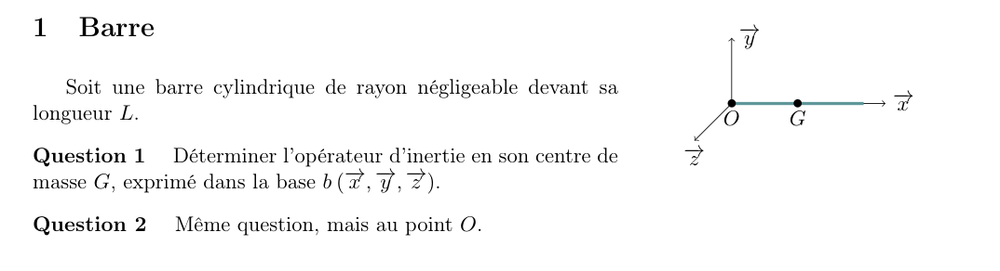
Exercice 1.1 — Barre
Q1Opérateur d'inertie en \(G\)
La masse est répartie uniquement sur l'axe \((G,\vec x)\) : toutes les composantes en \(y\) et \(z\) sont nulles, et \((G,\vec y)\), \((G,\vec z)\) jouent le même rôle, donc \(B=C\). Le seul terme utile est \(B=\displaystyle\int_S x^2\,dm=\dfrac{m}{L}\int_{-L/2}^{L/2}x^2\,dx=\dfrac{mL^2}{12}\).
La barre va de \(0\) à \(L\) : \(B=\dfrac{m}{L}\int_0^L x^2dx=\dfrac{mL^2}{3}\). Huygens donne aussi \(\tfrac{mL^2}{3}=\tfrac{mL^2}{12}+m\big(\tfrac L2\big)^2\).
Le rectangle est une plaque plane, et \(x\), \(y\) sont des axes de symétrie : la matrice est diagonale, et \(C=A+B\) (plaque plane). Avec \(A=\dfrac{m}{4ab}\int_{-a}^{a}\!\!\int_{-b}^{b}y^2\,dy\,dx=\dfrac{mb^2}{3}\) et, par analogie, \(B=\dfrac{ma^2}{3}\).
Par intégration de \(\vec{OG}=\tfrac{4}{\pi R^2}\int\!\!\int\vec{OM}\,r\,dr\,d\theta\) on trouve \(\vec{OG}=\dfrac{4R}{3\pi}(\vec x+\vec y)\). Vérification par le théorème de Guldin : le volume engendré par le quart de disque en tournant autour de l'axe \((O,\vec x)\) donne la même abscisse.
\(x_G=y_G=\dfrac{4R}{3\pi}\)
Q5Opérateur d'inertie en \(O\)
Le quart de disque est plan : \(C=A+B\). Avec \(x=r\cos\theta\), \(y=r\sin\theta\) et \(\cos^2\theta=\tfrac{1+\cos2\theta}{2}\) : \(B=\dfrac{4m}{\pi R^2}\int_0^R r^3dr\int_0^{\pi/2}\cos^2\theta\,d\theta=\dfrac{mR^2}{4}\), et par symétrie \(A=\dfrac{mR^2}{4}\), donc \(C=\dfrac{mR^2}{2}\).
Produit d'inertie : \(F=\dfrac{4m}{\pi R^2}\int_0^R r^3dr\int_0^{\pi/2}\cos\theta\sin\theta\,d\theta=\dfrac{mR^2}{2\pi}\). Le signe du terme hors diagonale est négatif dans la convention \(\bar I=\begin{pmatrix}A&-F&0\\-F&B&0\\0&0&C\end{pmatrix}\).
On applique Huygens entre \(O\) et \(G\), avec \(\overrightarrow{OG}=\tfrac{4R}{3\pi}(\vec x+\vec y)\) : on retranche \(m\dfrac{16R^2}{9\pi^2}\begin{pmatrix}1&-1&0\-1&1&0\0&0&2\end{pmatrix}\) à la matrice en \(O\).
Le corrigé du prof donne ce résultat tel quel ; il faut vérifier les signes hors diagonale en refaisant la soustraction (le terme \(-18\pi+64\) est celui du prof).
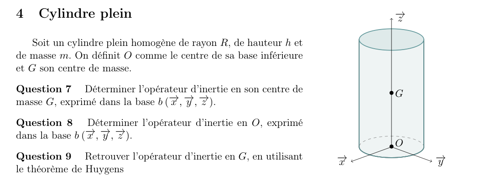
Exercice 1.4 — Cylindre plein
Q7Opérateur d'inertie en \(G\)
Solide de révolution d'axe \(\vec z\) : la matrice est diagonale et \(A=B\). On a \(C=\displaystyle\int(x^2+y^2)dm=\dfrac{m}{\pi R^2h}\int_0^R r^3dr\int_0^{2\pi}d\theta\int_{-h/2}^{h/2}dz=\dfrac{mR^2}{2}\). Pour \(A\) : \(A=\dfrac{C}{2}+\displaystyle\int z^2dm=\dfrac{mR^2}{4}+\dfrac{mh^2}{12}\).
Q8Opérateur d'inertie en \(O\), base de la face inférieure
On refait les calculs en intégrant \(z\) de \(0\) à \(h\) : \(\int z^2dm=\dfrac{mh^2}{3}\) ; donc \(A=B=\dfrac{mR^2}{4}+\dfrac{mh^2}{3}\) et \(C=\dfrac{mR^2}{2}\).
\(\overrightarrow{OG}=\dfrac h2\vec z\) : \(\bar I_{(G)}=\bar I_{(O)}-m\dfrac{h^2}{4}\,\mathrm{diag}(1,1,0)\), soit \(A=\dfrac{mR^2}{4}+\dfrac{mh^2}{12}\) : on retrouve la matrice de la question 7.
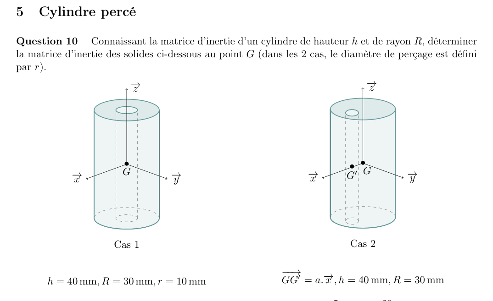
Exercice 1.5 — Cylindre percé
Q10Opérateur d'inertie en \(G\) (cas 1 : perçage centré ; cas 2 : perçage décalé de \(a\))
Méthode : on écrit le solide comme le cylindre plein de rayon \(R\) moins le cylindre plein de rayon \(r\) (perçage). Masses : \(m_p=\pi\rho hR^2\), \(m_c=\pi\rho hr^2\), \(m=\pi\rho h(R^2-r^2)\).
Cas 1 (perçage centré) : \(A=B=\dfrac m4(R^2+r^2)+\dfrac{mh^2}{12}\) et \(C=\dfrac m2(R^2+r^2)\).
Cas 2 (perçage décalé de \(a=20\) mm) : le cylindre percé est \(\bar I(G,S)=\bar I(G,C_p)-\bar I(G',C_c)-m_c\,\mathrm{diag}(0,a^2,a^2)\) (Huygens sur le perçage). On trouve \(A=\dfrac m4(R^2+r^2)+\dfrac{mh^2}{12}\), \(B=A-\dfrac{mr^2a^2}{R^2-r^2}\), \(C=\dfrac m2(R^2+r^2)-\dfrac{mr^2a^2}{R^2-r^2}\).
Numériquement (\(m=858\) g) : \(A=312{,}7\), \(B=302{,}6\), \(C=386{,}6\ \text{kg·mm}^2\). Le décalage augmente \(A\) et diminue \(B\) et \(C\).
2. Lecteur de DVD
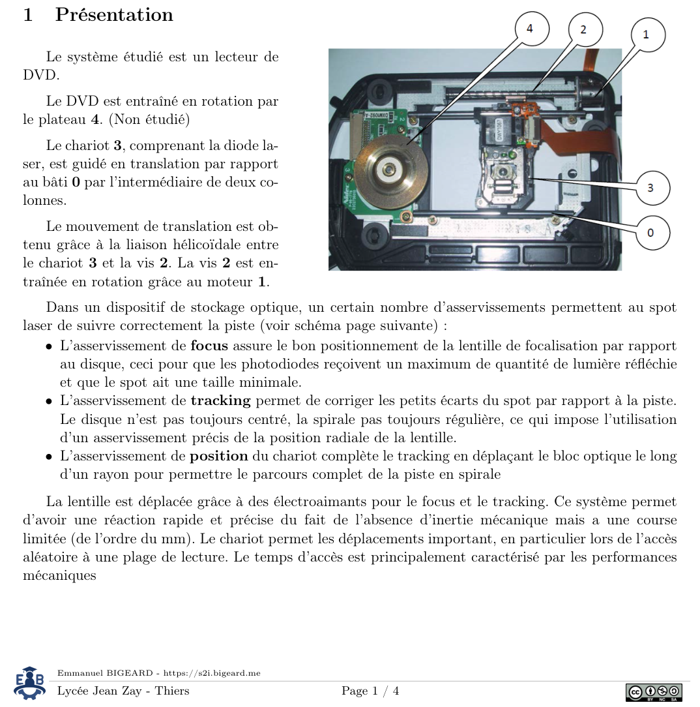
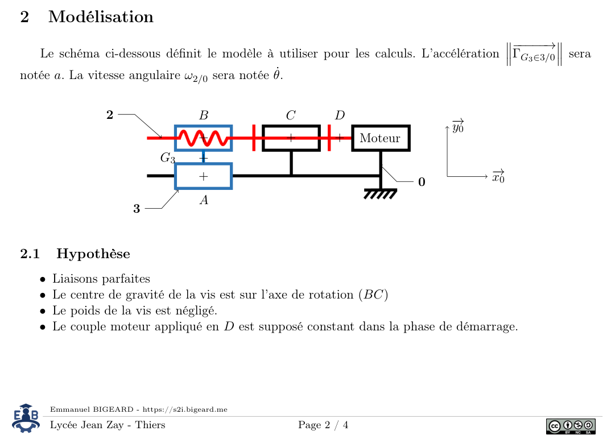
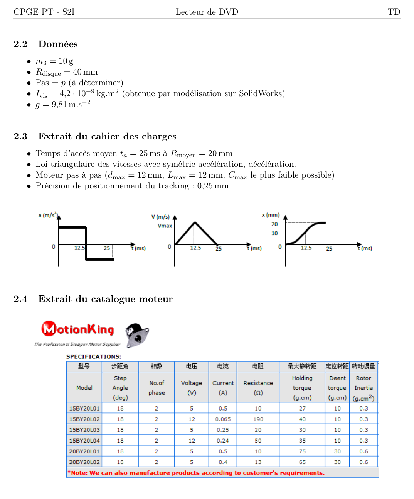
Exercice 2 — Lecteur de DVD
Hypothèses de l'énoncé : liaisons parfaites, centre de gravité de la vis sur l'axe, poids de la vis négligé, couple moteur constant pendant le démarrage. Données : \(m_3=10\) g, \(I_{vis}=4{,}2\cdot10^{-9}\) kg·m², pas \(p\) à déterminer, temps d'accès 25 ms à \(R_{moyen}=20\) mm.
Q1Mouvement de 3 par rapport à 0
Translation rectiligne de direction \(\vec x_0\).
Q2Inventaire des actions sur 3
Poids \(\{-m_3g\,\vec y_0\}\) en \(G_3\) ; liaison glissière–colonnes avec le bâti en \(A\) ; liaison hélicoïdale avec la vis 2 en \(B\) (torseur \(\{X_{23},Y_{23},Z_{23};L_{23},M_{23},N_{23}\}\)).
Q3PFD en projection sur \(\vec x_0\)
\(X_{23}=m_3\,a\)
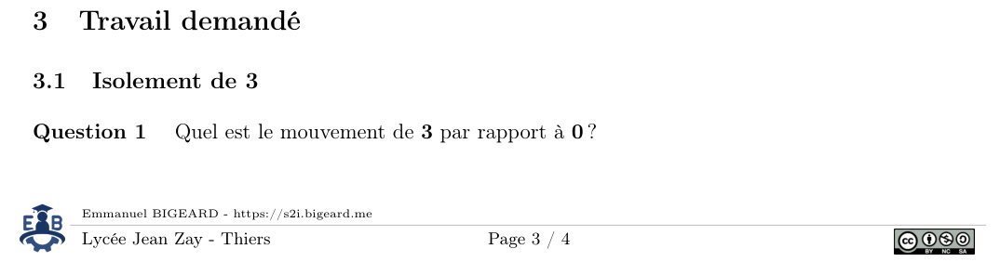
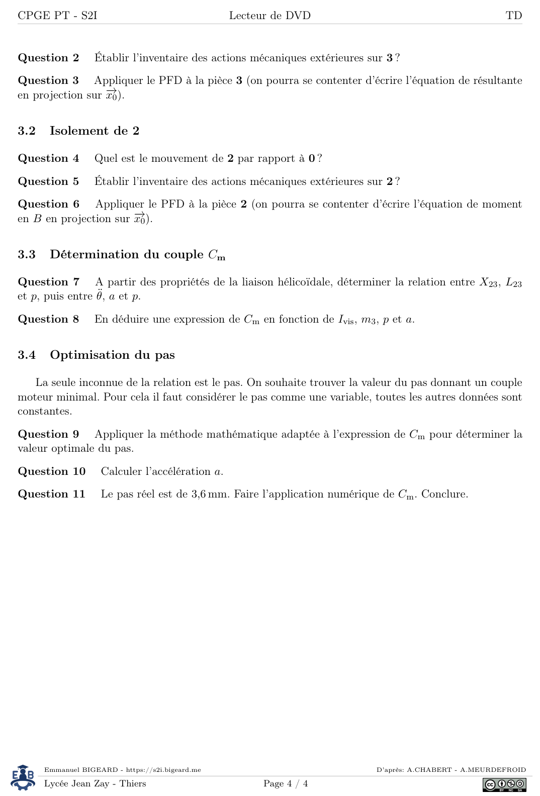
Exercice 2 (suite) — Couple moteur et optimisation du pas
Q4Mouvement de 2 et actions sur 2
La vis 2 tourne autour de \((D,\vec x_0)\). Actions : moteur \(\{C_m\,\vec x_0\}\) en \(D\), bâti \(\{X_{02},\dots\}\) en \(C\), écrou 3 \(\{X_{32},\dots,L_{32},M_{32},N_{32}\}\) en \(B\).
Q5PFD en moment autour de \(\vec x_0\)
\(C_m+L_{32}=I_{vis}\,\ddot\theta\)
Q6Relations de la liaison hélicoïdale
Pour un pas à droite, \(\omega_{3/2}=\tfrac{2\pi}{p}V_{B,3/2}\) et \(\omega_{3/2}=\omega_{3/0}-\omega_{2/0}=-\dot\theta\). On obtient \(L_{23}=-\dfrac{p}{2\pi}X_{23}\) et \(a=-\dfrac{p}{2\pi}\ddot\theta\).
Q7Couple moteur en fonction de \(I_{vis}\), \(m_3\), \(p\)
On remplace \(L_{32}=-L_{23}=\dfrac{p}{2\pi}X_{23}=\dfrac{p}{2\pi}m_3a\) dans la relation de la question 5, puis \(a=-\dfrac{p}{2\pi}\ddot\theta\) :
\(C_m=\Big(I_{vis}+\dfrac{p^2}{4\pi^2}m_3\Big)\ddot\theta\), donc \(I_{eq}=I_{vis}+\dfrac{p^2}{4\pi^2}m_3\) ramenée à l'arbre moteur.
Q8Pas optimal (couple minimal)
À \(a\) constant, \(C_m(p)=-a\Big(\dfrac{2\pi I_{vis}}{p}+\dfrac{p\,m_3}{2\pi}\Big)\). On dérive par rapport à \(p\) : \(\dfrac{dC_m}{dp}=-a\Big(-\dfrac{2\pi I_{vis}}{p^2}+\dfrac{m_3}{2\pi}\Big)\). L'annulation donne \(p^2=\dfrac{4\pi^2 I_{vis}}{m_3}\).
À \(t=12{,}5\) s, \(X=10\) mm, avec \(X=\tfrac12 at^2\) : \(a=\dfrac{2X}{t^2}=\dfrac{2\cdot10^{-2}}{(12{,}5\cdot10^{-3})^2}\approx 128\ \text{m/s}^2\).
Q10Application numérique avec le pas réel \(p=3{,}6\) mm
\(C_m\approx 1{,}67\ \text{N·mm}\approx 16{,}7\ \text{g·cm}\). Tous les moteurs du catalogue suffisent ; on prend un moteur alimenté en 5 V (tension disponible sur PC).
Le pas réel (3,6 mm) est un compromis entre le couple (pas optimal 4,07 mm) et la précision de positionnement, critère du cahier des charges.
3. Arbre de navire — phénomènes gyroscopiques
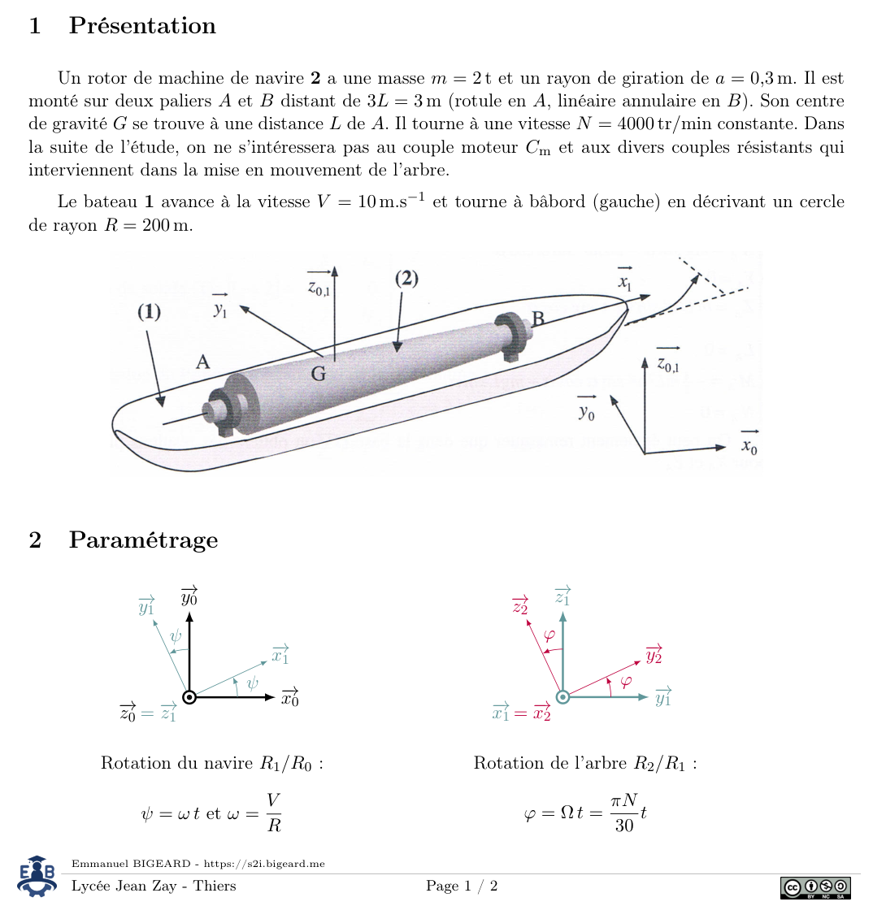
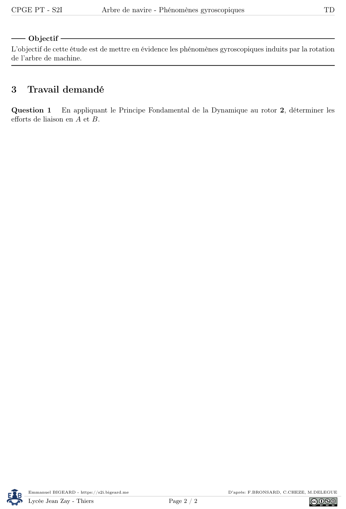
Exercice 3 — Arbre de navire (phénomènes gyroscopiques)
On en tire \(Y_B=\dfrac{mV^2}{3R}\), \(Y_A=\dfrac{2mV^2}{3R}\), \(Z_A=\dfrac23mg+\dfrac{ma^2V\Omega}{6RL}\), \(Z_B=\dfrac13mg-\dfrac{ma^2V\Omega}{6RL}\).
Numériquement (\(m=2000\) kg, \(a=0{,}3\) m, \(\Omega=133\pi\) rad/s, \(V=10\) m/s, \(R=200\) m, \(L=1\) m) : \(Y_A=666{,}7\) N, \(Y_B=333{,}3\) N, \(Z_A\approx13\,707\) N, \(Z_B\approx5\,913\) N.
Bonus du corrigé : en négligeant les effets dynamiques (PFS seul), \(Z_A=\tfrac23mg=13\,080\) N et \(Z_B=\tfrac13mg=6\,540\) N. L'écart de \(\approx 630\) N vient du couple gyroscopique.
4. Éolienne
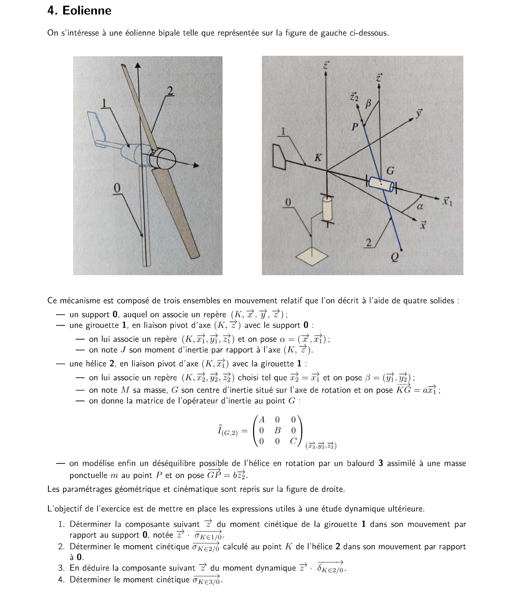
Exercice 4 — Éolienne (moments cinétique et dynamique)
Pas de corrigé dans le dossier Bigeard : correction propre. Paramétrage : \(\alpha=(\vec x,\vec x_1)\) pour la girouette 1 (pivot d'axe \(\vec z\), inertie \(J\)) ; \(\beta=(\vec y_1,\vec y_2)\) pour l'hélice 2 (pivot d'axe \(\vec x_1\)), \(\vec x_2=\vec x_1\). Dans \(b_2\) : \(\vec z=\sin\beta\,\vec y_2+\cos\beta\,\vec z_2\).
Q1Moment cinétique de la girouette en \(K\)
\(\vec z\cdot\vec\sigma_{K\in1/0}=J\,\dot\alpha\)
Q2Moment cinétique de l'hélice en \(K\), par rapport à 0
\(\vec\Omega_{2/0}=\dot\beta\vec x_1+\dot\alpha\vec z\), soit en \(b_2\) : \((\dot\beta,\ \dot\alpha\sin\beta,\ \dot\alpha\cos\beta)\). Le point \(G\) a pour vitesse \(\vec V_{G\in2/0}=a\dot\alpha\,\vec y_1\). On applique \(\vec\sigma_K=\vec\sigma_G+m\,\vec{KG}\wedge\vec V_G\) avec \(\vec{KG}=a\vec x_2\), et \(\vec\sigma_G=\bar I(G,2)\cdot\vec\Omega\) :
\(K\) est fixe dans 0, donc \(\vec\delta_{K\in2/0}=\dfrac{d\vec\sigma_K}{dt}\big|_{R_0}\). On dérive dans \(b_2\) puis on ajoute \(\vec\Omega_{2/0}\wedge\vec\sigma_K\), et on projette sur \(\vec z=(0,\sin\beta,\cos\beta)\) : les termes en \(\sin\beta\cos\beta\) se regroupent en \(2(B-C)\).
Contrôle : pour \(\beta\) constant, le terme en \(\ddot\alpha\) est bien le coefficient du moment cinétique suivant \(\vec z\) de la question 2.
Q4Moment cinétique du balourd 3 en \(K\)
Le balourd est ponctuel, en \(P\) avec \(\vec{KP}=a\vec x_1+b\vec z_2\) ; sa vitesse est \(\vec V_P=\vec\Omega_{2/0}\wedge\vec{KP}\). Donc \(\vec\sigma_{K\in3/0}=m\,\vec{KP}\wedge\vec V_P\).
Exercice 5 — Régulateur centrifuge (dimensionnement du ressort)
Q1Graphe des liaisons
Bâti 0 –pivot d'axe \((O,\vec x)\)– 1 –pivot d'axe \((A,\vec z_1)\)– 2 ; 2 –ponctuel normal \((B,\vec x)\)– 3 ; 3 –glissière de direction \(\vec x\)– 1 au point \(C\) (ressort de raideur \(k\)) ; action de pesanteur sur 2.
Q2Moment cinétique de 2 en \(A\)
\(\vec\Omega_{2/0}=\dot\alpha\vec x+\dot\beta\vec z_1\), \(\vec{AG}=b\vec y_2\), \(\vec V_{A\in2/0}=a\dot\alpha\vec z_2\). Donc \(\vec\sigma_{A\in2/0}=\bar I(A,2)\cdot\vec\Omega+m\vec{AG}\wedge\vec V_A\), dont les composantes dans \(b_2\) sont :
On a \(\vec\delta_{A\in2/0}=\dfrac{d\vec\sigma_A}{dt}\big|_R+\vec V_{A/0}\wedge m\vec V_{G\in3/0}\). Le second terme est orthogonal à \(\vec z_1\) (produit mixte) ; \(\dfrac{d\vec z_1}{dt}\big|_R=(-\dot\alpha\sin\beta,-\dot\alpha\cos\beta,0)_{b_2}\).
Q4Théorème du moment dynamique autour de \((A,\vec z_1)\)
Les actions de la liaison pivot en \(A\) n'ont pas de moment suivant \(\vec z_1\) : on profite de cette équation pour éliminer les inconnues de liaison. Les moments suivant \(\vec z_1\) sont celui de l'action de 3 sur 2, \(cX_{32}\sin\beta\), et celui du poids, \(bmg\cos\alpha\sin\beta\).
Pour le solide 3 (glissière de direction \(\vec x\)) : en régime permanent, \(\beta\) est constant, donc \(\ddot x=0\) et \(F_R=-X_{23}-X_{2'3}\). En utilisant \(\beta'=\beta\) et \(\alpha'=\alpha+\pi\) (\(\cos\alpha'=-\cos\alpha\)), les termes en gravité s'annulent et les termes dynamiques s'ajoutent :
Avec \(F_R=k\,\Delta l\) et \(\Delta l\le\Delta l_{max}\) : \(k\ge\dfrac{F_R}{\Delta l_{max}}\).
\(k\ge\dfrac{F_R}{\Delta l_{max}}\)
L'énoncé ne donne pas de valeurs numériques pour cette question dans le corrigé du prof.
6. Équilibreuse dynamique
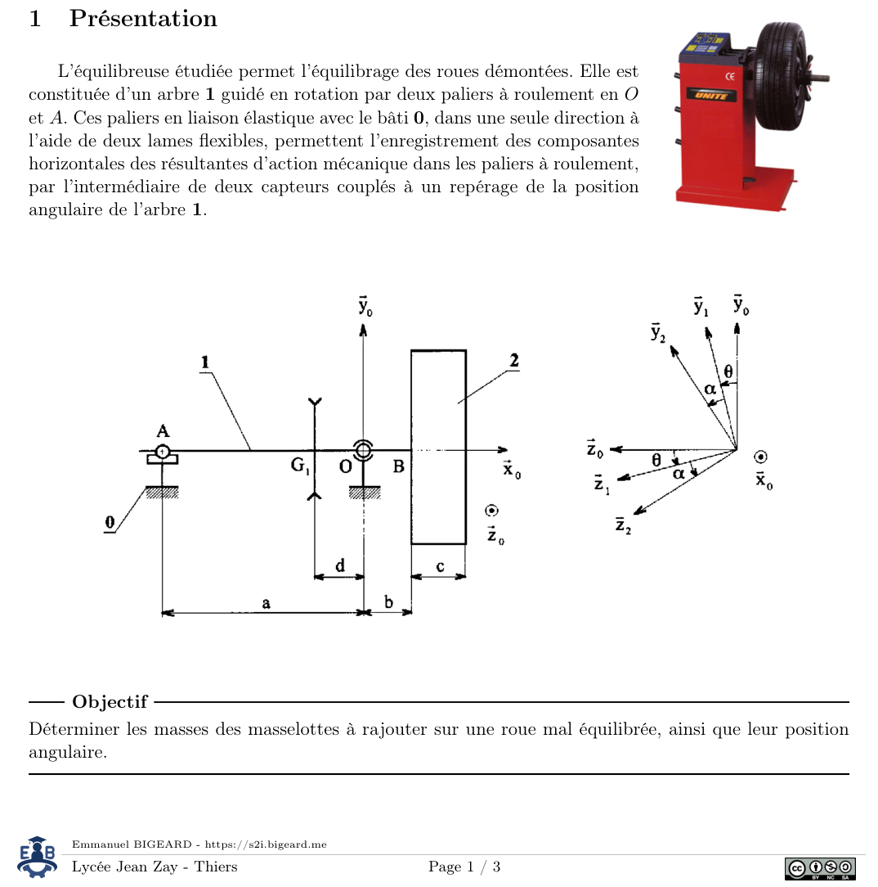
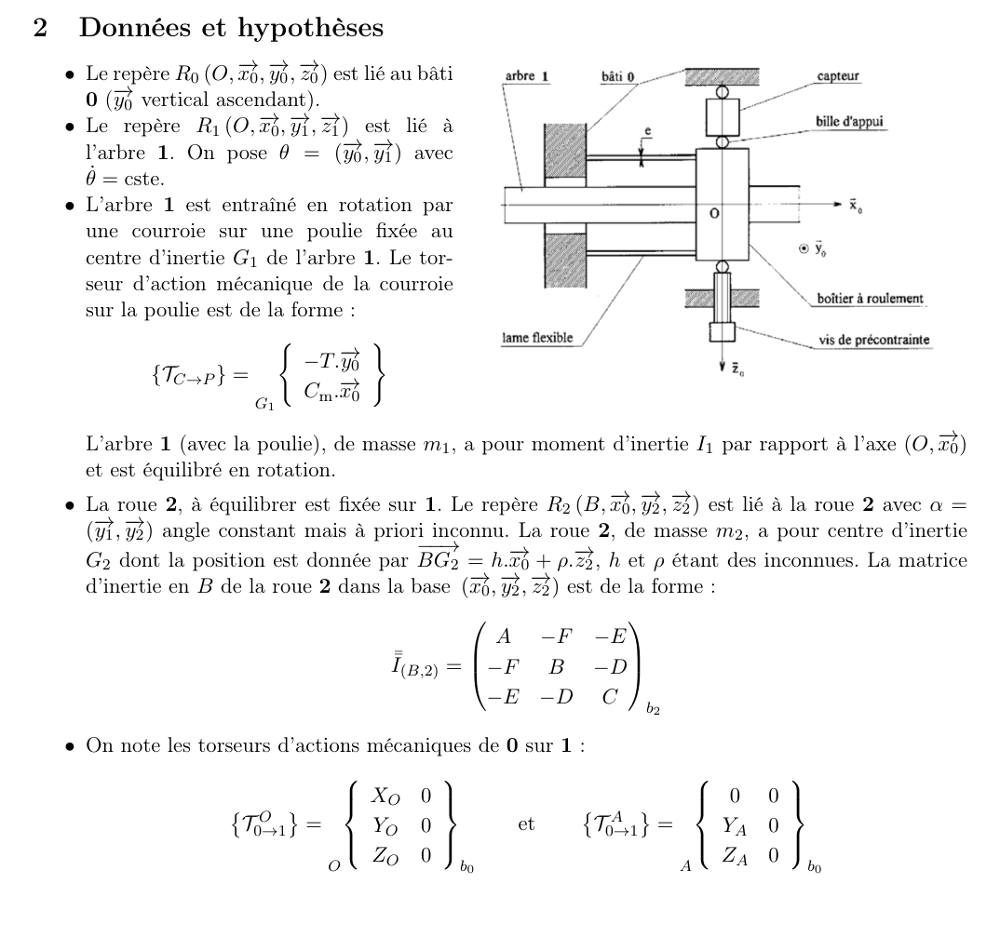
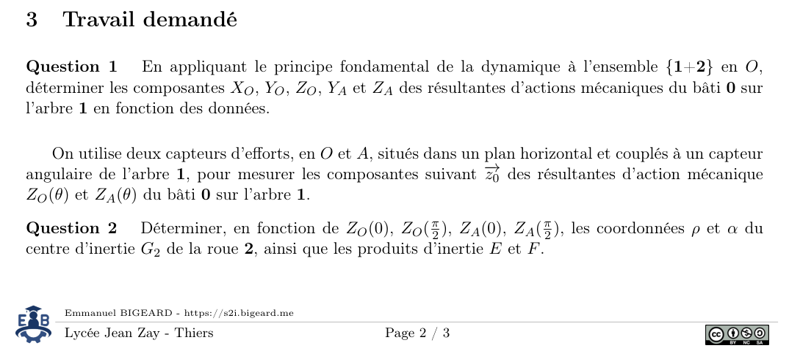
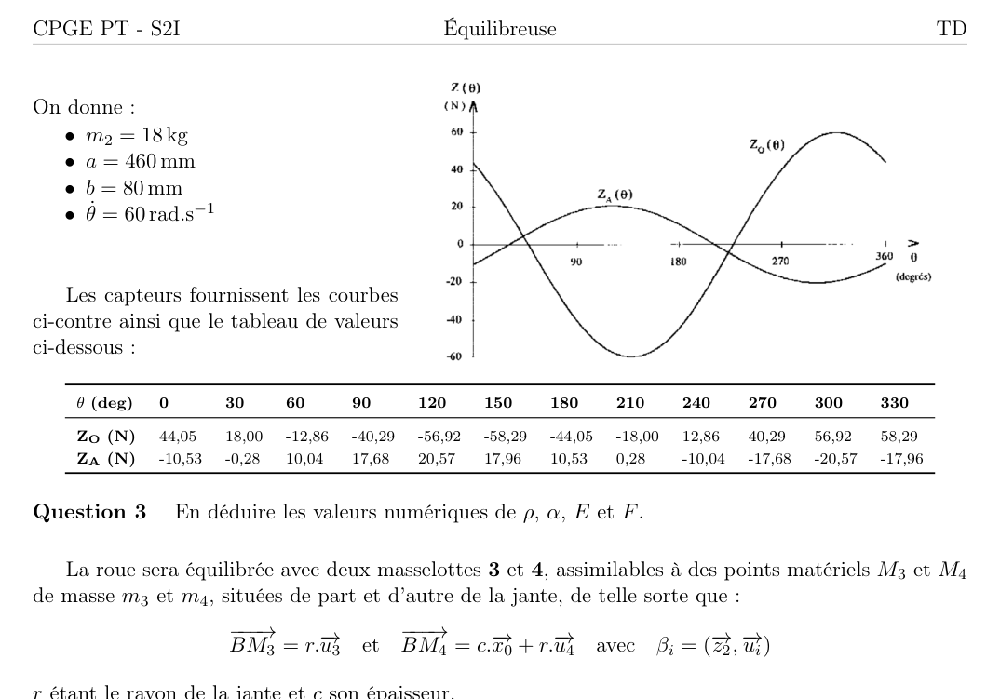
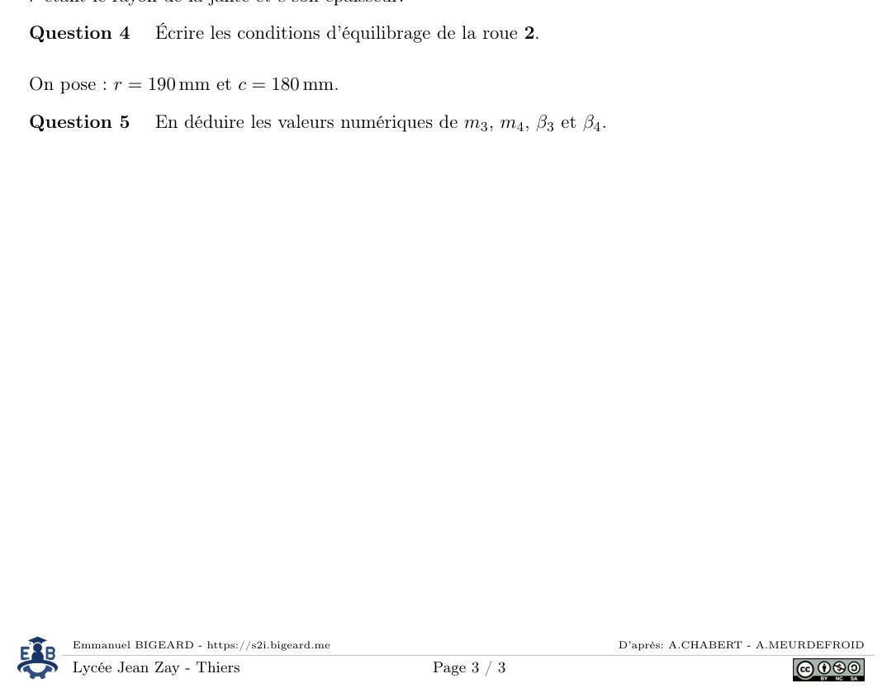
Exercice 6 — Équilibreuse dynamique
Q1PFD appliqué à \(\Sigma=\{1+2\}\) en \(O\)
Le torseur dynamique de 2 en \(B\) et son transport en \(O\) donnent \(\vec\sigma_{O\in2/0}=\big[-F\vec z_2+(E+m_2\rho b)\vec y_2\big]\dot\theta\). Le théorème de la résultante et le théorème du moment en \(O\) (projetés sur \(\vec x_0,\vec y_0,\vec z_0\)) donnent :
On mesure \(Z_O\) et \(Z_A\) pour \(\theta=0\) et \(\theta=\pi/2\). Sommes : \(Z_A(0)+Z_O(0)=-m_2\rho\dot\theta^2\cos\alpha\) et \(Z_A(\tfrac\pi2)+Z_O(\tfrac\pi2)=m_2\rho\dot\theta^2\sin\alpha\). D'où :
Données : \(m_2=18\) kg, \(a=460\) mm, \(b=80\) mm, \(\dot\theta=60\) rad/s. Valeurs relevées : \(Z_A(0)=-10{,}53\) N, \(Z_O(0)=44{,}05\) N, \(Z_A(\tfrac\pi2)=17{,}68\) N, \(Z_O(\tfrac\pi2)=-40{,}29\) N. Donc \(Z_A(0)+Z_O(0)=33{,}5\) N et \(Z_A(\tfrac\pi2)+Z_O(\tfrac\pi2)=-22{,}6\) N.
\(\rho\approx0{,}62\) mm ; \(\alpha=214^\circ\) (défini à \(\pi\) près, avec \(\cos\alpha<0\)) ; \(F\approx-1{,}1\cdot10^{-3}\) kg·m² ; \(E\approx1{,}5\cdot10^{-3}\) kg·m².
Dans le corrigé du prof, les deux valeurs sont écrites « F = … » puis « F = … » : la première est \(F\) et la seconde \(E\), ce que confirment les formules.
Q4Conditions d'équilibrage de la roue
Statique : \(G\) sur l'axe \((B,\vec x_0)\). Avec les masselottes 3 et 4 (\(\overrightarrow{BM_3}=r\vec u_3\), \(\overrightarrow{BM_4}=c\vec x_0+r\vec u_4\), \(\beta_i=(\vec z_2,\vec u_i)\)) :
Le corrigé écrit \(F+m_4cr\cos\beta_4\) pour la seconde ; c'est une coquille probable, la forme cohérente avec la première est en \(\sin\beta_4\). À vérifier.
Q5Masses et positions des masselottes (\(r=190\) mm, \(c=180\) mm)